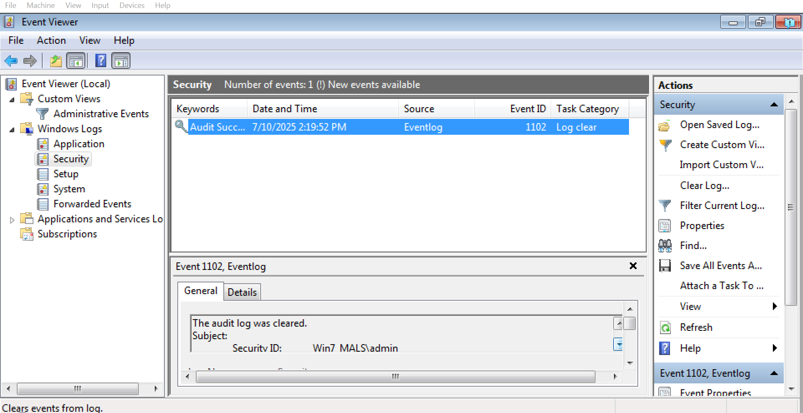

CyberSleuth Academy
Dashboard
Training Zone
Leaderboard
Knowledge Battle
Event Viewer --- --- --- notes

×
Title
Information goes here...
Explore Task Manager →
← Go Back
Instructions
Welcome to the Event Viewer simulation!
Hover over areas to find interactive hotspots.
Click on them to learn more about cybersecurity tools.
Use the navigation buttons below to explore more modules.
Instructions